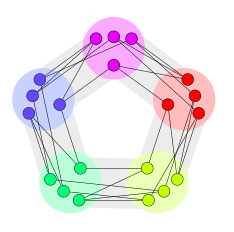

A friendly guide to understanding the Dinitz conjecture
by Satira
August 22, 2021
Table of contents
Introduction ↩︎
This is a guide for people who want to learn how to understand a primary research paper in math, specifically in the area of graph theory, one of the more accessible areas of math. If that is the case, this is the guide for you! This guide covers the background needed to understand the proof of the Dinitz conjecture. The way I would suggest using this guide is to first give a look through of Galvin's succinct proof. Pending any confusions from the reader, reading the "Definitions" and "Beginner problems" sections of this guide will aid in clarifying definitions and quizzing oneself on the way in which they are to be used, aiding in gaining foundation to make the paper easy-reading for anyone! After these two sections are covered to one's liking, the "Problems" section covers some harder questions as well as how to interpret the two main results in the paper. Once the reader has covered these three sections, they will be well equipped to read through this succinct paper.
Definitions ↩︎
Beginner problems ↩︎
Problems ↩︎
Challenge Problems ↩︎
Lemma 2.1 is essential in proving the Dinitz conjecture in Galvin's paper. Lemma 2.1 in Galvin's paper states: "Let \(D\) be a digraph in which every induced subdigraph has a kernel. If \(f,g : V(D) \to \mathbb{N}\) are such that \(f(v) \ge \sum_{u \in N[v]} g(u)\) whenever \(g(v) > 0\), then \(D\) is (f:g)-choosable". Below is the body of the proof and some exercises based on it to exercise your thinking!
Let \(V = V(D)\). We use induction on \(\sum_{v \in V} g(v)\). Let \(W = \{v \in V: g(v) > 0\}\). Let sets \(A_v\) (for \(v \in V\) with \(|A_v| = f(v)\) be given. Choose any \(c\) in \(C = \cup_{v \in W} A_v\). Let \(S = {v \in W: c \in A_v}\). Let \(K\) be a kernel of \(S\). Define \(g': V \to \mathbb{N}\) by setting \(g'(v) = g(v) - 1\) for \(v \in K\), and \(g'(v) = g(v)\) for \(v \notin K\), and let \(f'(v) = |A_v\setminus\{c\}|\). Then \(\sum_{v \in V} g'(v) < \sum_{v \in V} g(v)\) and \(f'(v) \ge \sum_{u \in N[v]} g'(u)\) whenever \(g'(v) > 0\). By the induction hypothesis, \(D\) is (f':g')-choosable. Thus there are sets \(B'_u\) and \(B'_v\) that are subsets of \(A_u\setminus\{c\}\) and \(A_v\setminus\{c\}\), respectively, such that for any \(u\) and \(v\) that share an edge, \(B'_u \cap B'_v\) is empty. If we can show that adding back a color to the appropriate \(B'\) sets will result in every \(v\) being assigned a subset \(B'_v\) that has size \(g(v)\) and is a subset of \(A_v\), then we will have shown that \(D\) is (f:g)-choosable. Define sets \(B_v\) by setting \(B_v = B'_v \cup \{c\}\) if \(v \in K\), and \(B_v = B'_v\) otherwise. Then \(|B_v| = g(v)\) for every \(v \in V\), and \(B_u \cap B_v\) is empty if \(u\) and \(v\) share an edge.
The result of "every line graph of a multigraph is solvable iff it is perfect" is used as the first step to prove the Dinitz conjecture. It is shown in an earlier result (which is one of my open questions/areas to explore, that is clearly explained in that is covered in Maffray's paper), that the line graph of the bipartite graph \(K_{n,n}\), is perfect. The statement "every line graph of a multigraph is perfect" is equivalent to
- "every perfect line graph is solvable" (by Maffray's theorem)
- "every line graph of a multigraph has the property that every induced subgraph is solvable" (this is by the fact that "every induced subgraph of a solvable graph G, is solvable", which is an open question of mine)
- "every line graph of a multigraph has the property that every induced subgraph's normal orientations contain a kernel" (definition of solvable)
- "if D is a normal orientation of the line graph of \(K_{n,n}\), then as the underlying graph of D is solvable, every induced subgraph of D contains a kernel" (this is by "every induced subgraph of a normal graph, is normal" and by the definition of solvable that states that "every normal orientation contains a kernel"--collectively these two statements imply that every induced subgraph of D is normal, and thus has a kernel)
My open questions ↩︎
- Why is a clique defined to be non empty?
-
(Maffray's theorem)
- Why is it the case that the line graph of a multigraph (a graph with potentially multiple edges between the same pair of vertices) is perfect iff it is solvable?
- How do you visualize the kernel of any graph? Right now the only cases I know how to in are when the graph is fully connected (where the kernel must consist of just 1 vertex)
-
How do you determine if the vertices of a graph can be partitioned into sets, where each element of the partition must contain more than 1 element and contains vertices that form an independent set?
- For example this is not possible for a fully connected graph
-
However you can see that in the graph below, you can partition the vertices into 5 sets containing 4 vertices each
- 
- Show (or disprove) that every non normal orientation \(N\) of a solvable graph \(G\), where if any vertex is deleted from \(N\) and the graph becomes normal, that \(N\) will have a kernel.
- Can you find an undirected graph \(G\) where the size of the set of its normal orientations will increase if one of \(G\)'s vertices are removed?
-
Is this graph solvable?
- Below is my attempted proof sketch with the sub bullets under 1) and 2) remaining unsolved by me.
- A solvable graph is one where every normal orientation has a kernel--a "normal orientation" of an undirected graph, is one where adding directed edges between any two vertices \(u\) and \(v\) with an edge in the undirected graph, will result in a directed graph (digraph) such that every clique has a kernel.
-
We will consider the set of normal orientations on a graph missing any particular vertex \(v\) from \(G\) (with all the incident edges to \(v\) removed as well), and show that for every element in this set, the normal orientation \(N\) contains a kernel. Thus we will have shown that removing any \(v\) will result in a solvable subgraph, and we can extend this process recursively by removing any number of vertices. There are two cases on the type of \(N\), and below each case is the intermediate result used to prove the case:
-
1) there exists a normal orientation \(M\) of \(G\) such that removing \(v\) results in \(N\).
- Show (or disprove) that every normal graph \(G\) with a kernel \(K\), where if any vertex is deleted and the graph continues to be normal, that this graph will continue to have a kernel.
-
2) there exists a non normal orientation \(M\) of \(G\) such that removing \(v\) results in \(N\).
- Show (or disprove) that every non normal orientation N of a solvable graph \(G\), where if any vertex is deleted from \(N\) and the graph becomes normal, that \(N\) will have a kernel.
-
1) there exists a normal orientation \(M\) of \(G\) such that removing \(v\) results in \(N\).